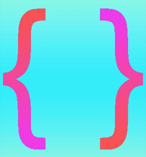
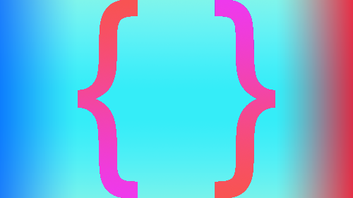

Картинка состоит из 2 частей: Фон в формате jpeg c весом
19.10 kb и вырезанные скобки в формате png c весом 38.59 kb.
Общий вес - 57,69 kb

Картинка состоит из 3 частей: Скобки в формате png c весом
52,6 kb. и верх с низом в jpeg c весом 9,71 kb.
Общий вес - 62,1 kb.
